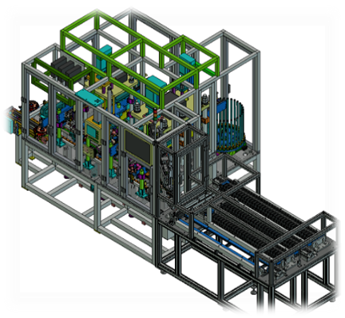
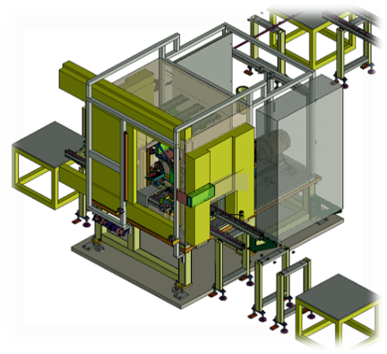

<div class="tab-wrapper" style="text-align: center; padding-top: 90px; padding-bottom: 90px;">
    
    <style>
        .fade-in-target {
            max-width: 100%;
            height: auto;
            display: inline-block;
            
            /* 테두리와 그림자는 지우고 애니메이션만 유지합니다 */
            animation: fadeInUpOnly 1.2s ease-out forwards;
        }

        @keyframes fadeInUpOnly {
            from {
                opacity: 0;
                transform: translateY(40px); /* 40px 아래에서 투명하게 시작 */
            }
            to {
                opacity: 1;
                transform: translateY(0);    /* 원래 위치로 오면서 선명해짐 */
            }
        }
    </style>

    <div class="tab-content">
        
    </div>

</div>


<style>

/* 전체 */
.tab-wrapper{
    text-align:center;
    padding-top:90px;
}

/* 버튼 영역 */
.tab-menu{
    display:flex;
    justify-content:center;
    gap:12px;
    margin-bottom:40px;
}

/* 버튼 */
.tab-btn{
    padding:10px 18px;
    border:none;
    background:#eeeeee;
    cursor:pointer;
    border-radius:6px;
    transition:0.3s;
    font-weight:500;
}

/* 활성 버튼 */
.tab-btn.active{
    background:#9e9e9e;
    color:#fff;
}

/* hover */
.tab-btn:hover{
    background:#d6d6d6;
}

/* 이미지 영역 */
.tab-content{
    display:flex;
    justify-content:center;
}

/* 🔥 핵심: 이미지 애니메이션 */
.tab-img{
    display:none;
    width:85%;
    max-width:1200px;
    margin:0 auto;

    opacity:0;
    transform: scale(0.95);
    transition: opacity 0.6s ease, transform 0.6s ease;
}

/* 활성 이미지 */
.tab-img.show{
    display:block;
    opacity:1;
    transform: scale(1);
}

/* 모바일 */
@media (max-width:768px){

    .tab-wrapper{
        padding-top:60px;
    }

    .tab-img{
        width:95%;
    }
}

</style>

<script>

function showTab(id, btn){

    // 이미지 변경
    document.querySelectorAll('.tab-img').forEach(img=>{
        img.classList.remove('show');
    });

    document.getElementById(id).classList.add('show');

    // 버튼 active
    document.querySelectorAll('.tab-btn').forEach(b=>{
        b.classList.remove('active');
    });

    btn.classList.add('active');
}

</script>
<a href="index.html" style="
    position:fixed;
    top:20px;
    left:50px;
 transform:translateX(-50%);
    width:42px;
    height:42px;

    background:#fff;
    border-radius:50%;
    box-shadow:0 4px 12px rgba(0,0,0,0.12);

    display:flex;
    align-items:center;
    justify-content:center;

    text-decoration:none;
    font-size:16px;
    color:#333;

    z-index:999;
    transition:0.2s;
">
    ⌂
</a>

<div class="slider-wrapper" style="text-align: center; padding-top: 50px; padding-bottom: 90px; position: relative;">
    
    <style>
        /* 슬라이더 전체 컨테이너 (메인 사진의 반 크기 정도 설정) */
        .slider-container {
            position: relative;
            max-width: 600px; /* 메인 이미지 크기에 맞춰 조절 가능 (예: 500px~600px) */
            margin: 0 auto;
            overflow: hidden; /* 영역 밖으로 나가는 사진 숨김 */
        }

        /* 사진들이 가로로 배치되는 통로 */
        .slider-track {
            display: flex;
            transition: transform 0.4s ease-in-out; /* 부드럽게 넘어가는 효과 */
        }

        /* 슬라이더 안의 개별 이미지 크기 설정 */
        .slider-item {
            min-width: 100%;
            box-sizing: border-box;
            display: flex;
            justify-content: center;
        }

        .slider-item img {
            width: 100%;
            height: auto;
            display: block;
        }

        /* 이동 화살표 버튼 공통 스타일 */
        .slider-btn {
            position: absolute;
            top: 50%;
            transform: translateY(-50%);
            background-color: rgba(0, 0, 0, 0.4);
            color: white;
            border: none;
            width: 40px;
            height: 40px;
            border-radius: 50%;
            cursor: pointer;
            font-size: 20px;
            display: flex;
            align-items: center;
            justify-content: center;
            transition: background 0.3s;
            z-index: 10;
        }

        .slider-btn:hover {
            background-color: rgba(0, 0, 0, 0.7);
        }

        /* 화살표 각각의 위치 */
        .btn-left { left: 20px; }
        .btn-right { right: 20px; }
    </style>

    <button class="slider-btn btn-left" onclick="moveSlider(-1)">&#10094;</button>

    <div class="slider-container">
        <div class="slider-track" id="sliderTrack">
            <div class="slider-item"></div>
            <div class="slider-item"></div>
            <div class="slider-item"></div>
            <div class="slider-item"></div>
            <div class="slider-item"></div>
            <div class="slider-item"></div>
        </div>
    </div>

    <button class="slider-btn btn-right" onclick="moveSlider(1)">&#10095;</button>

    <script>
        let currentIndex = 0;
        const track = document.getElementById('sliderTrack');
        const totalSlides = track.children.length;

        function moveSlider(direction) {
            currentIndex += direction;

            // 마지막 사진에서 오른쪽을 누르면 첫 사진으로 이동
            if (currentIndex >= totalSlides) {
                currentIndex = 0;
            }
            // 첫 사진에서 왼쪽을 누르면 마지막 사진으로 이동
            else if (currentIndex < 0) {
                currentIndex = totalSlides - 1;
            }

            // 가로로 이동시키는 계산식
            track.style.transform = `translateX(-${currentIndex * 100}%)`;
        }
    </script>

</div>

